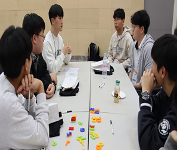
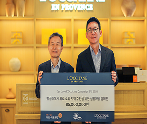
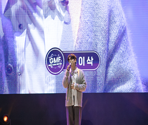
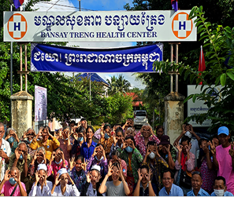

From heart to story
하트 스토리
하트-하트재단과 만들어 나가는,
더불어 함께하는 세상의 수많은 이야기들
-

SK하이닉스와 함께하는 2024 SK하이닉스 하인슈타인 홈커밍데이 현장으로 초대합니다!
하트-하트재단과 SK하이닉스가 함께하는 전국 아동·청소년 대상 소프트웨어 교육 지원을 통해
more -

8년째 이어지는 록시땅 하트-하트재단의 실명예방 스토리
8월 22일, ‘아이 러브 록시땅(EYE LOVE L’OCCITANE) 2024’ 실명예방 캠페인을 통해
more -
홍이삭 가수
서로의 꿈이 어우러진 무대, 제8회 GMF 성공적 개최 현장!
2017년에 시작된 GMF는 하트-하트재단이 주최하고, SK이노베이션과 문화체육관광부, SM C&C가 후원, 사회복지공동모금회가 지원하는
more -
캄보디아
캄보디아, 비감염성 질환(NCD)-안과 통합검진 활동 시작!
하트-하트재단 캄보디아 지부는 캄보디아 바탐방 지역에서 비감염성 질환(Non-Communicable Diseases, NCD)을
more